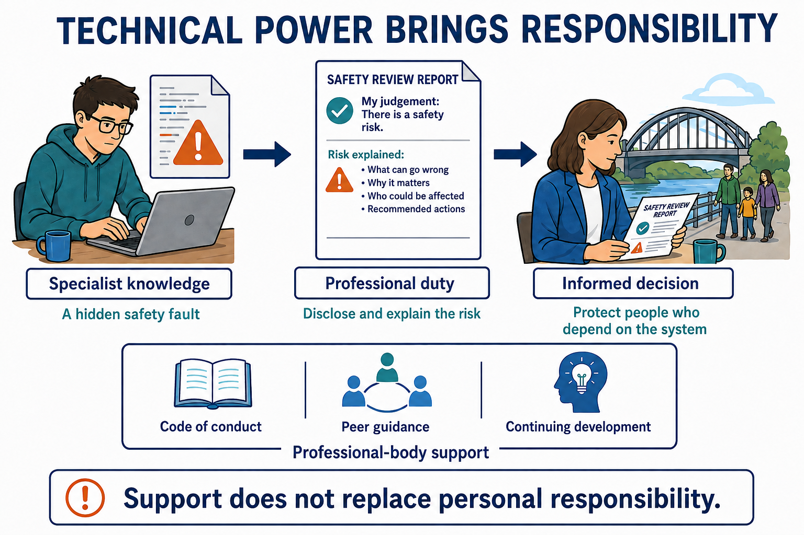

Why computing professionals need ethics
S7.01.A01
Visual overview
From specialist knowledge to an informed decision

Visual transcript
- Specialist knowledge: a programmer can identify a hidden safety fault that the customer cannot independently assess.
- Professional duty: disclose the fault and explain its risk so the customer can make an informed decision.
- The purpose is to protect people who depend on the system.
- A code of conduct, peer guidance and continuing development support judgement; they do not replace personal responsibility or product testing.
Core explanation
Ethics concerns principles about right and wrong conduct. A computing professional makes decisions that can affect other people's safety, privacy, opportunities and resources. Users may lack the technical knowledge or access needed to detect an unsafe system or challenge its design, so technical power brings responsibilities.
Professional ethics helps guide decisions when interests conflict or a rule does not settle what should be done. Its purposes include protecting the public interest, promoting honest and competent work, maintaining trust and making professionals accountable for foreseeable effects of their decisions.
From technical power to responsibility
| Professional can... | Others depend on... | Ethical concern |
|---|---|---|
| Design a medical warning | Reliable information about danger | Patient safety |
| Access personnel records | Appropriate use of private details | Confidentiality |
| Report a software test result | An honest basis for release | Integrity of professional advice |